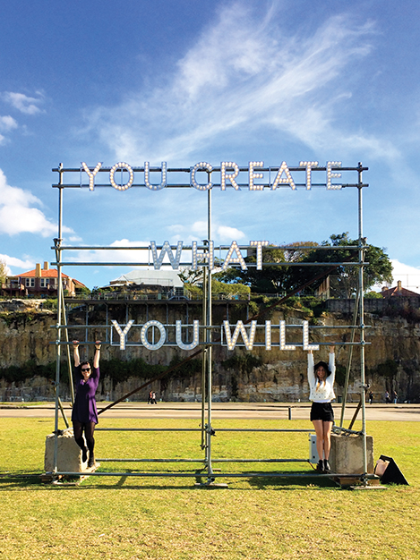
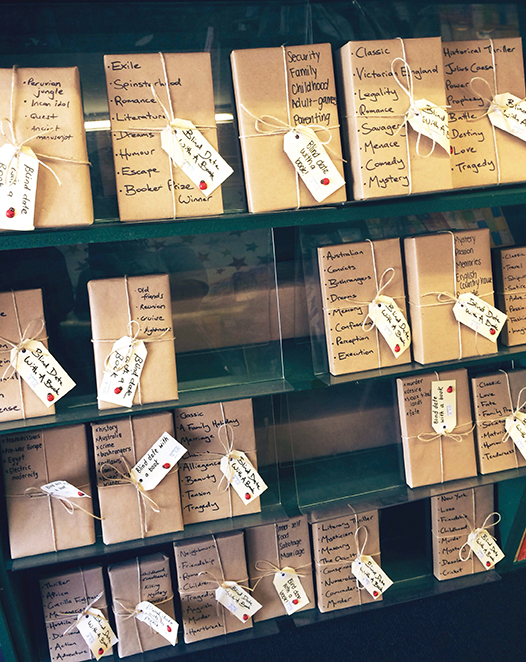
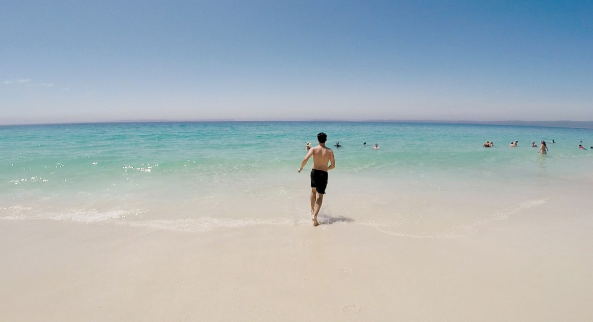
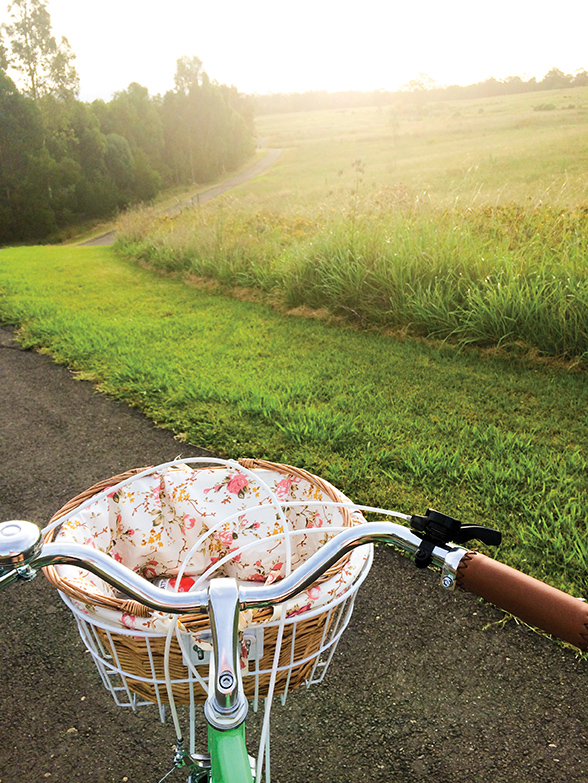
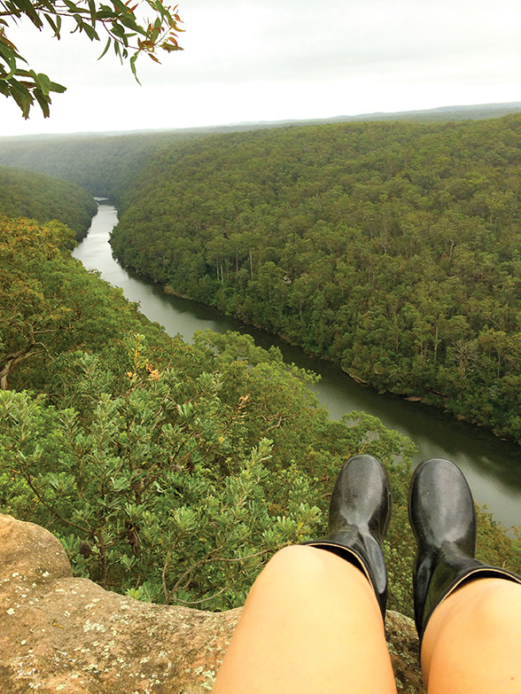
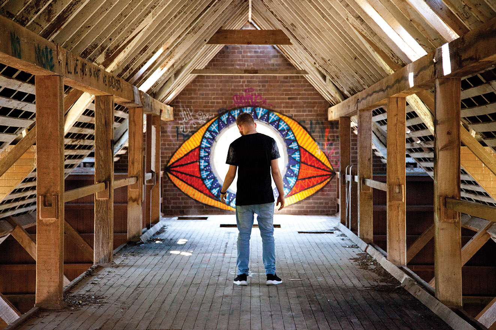
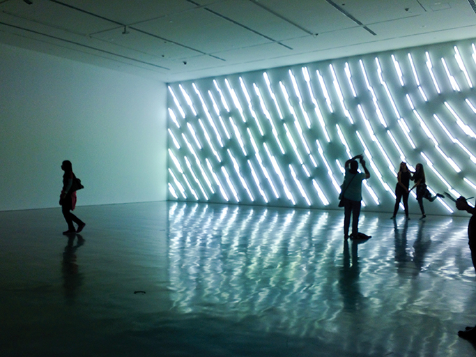
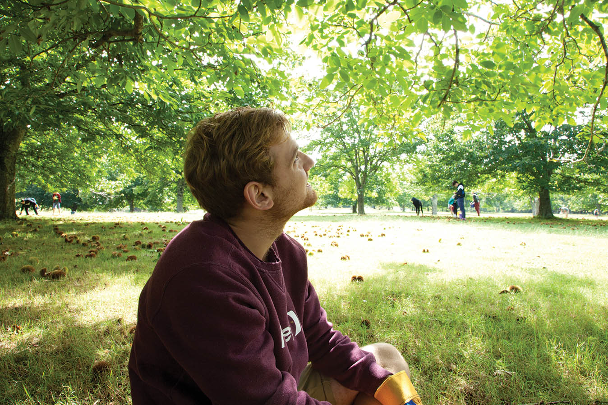
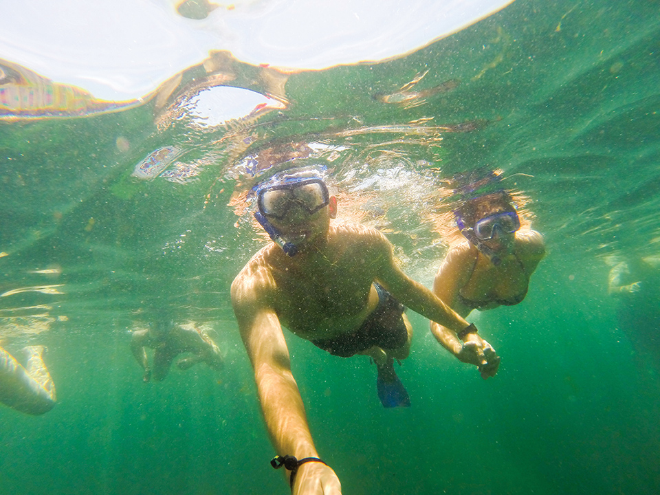
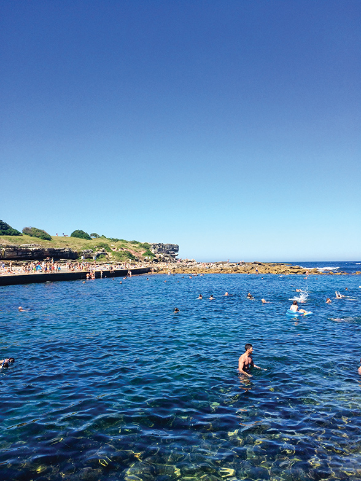

CONTOURCULTURE

Explorers On Sundays
Join Stephanie Tenaglia and discover ten destinations that will satisfy your inner-adventurer
Jumping onto a plane and travelling to another country brings incredible experiences. The ‘travel bug’ is a real thing, but unfortunately it’s not very often that we are able to holiday for months at a time in foreign lands.
The cure to wanderlust is to become an explorer in your own city and I have become an expert. You would be surprised at how many hidden treasures there are to explore in Sydney. You just need to spend time researching and going to see new places for yourself.
I’ve managed to narrow down my 10 favourite places to explore on Sundays;
Cockatoo Island
Cockatoo Island is a world heritage listed island in the middle of Sydney Harbour. Hop on a ferry and explore the island’s bars, restaurants and views for the day, or stay the night in the ‘glamping’ facilities.You will be surprised how much there is to do on this little island.
There are tennis courts, photography tours, boat hire, kayaking, fishing, and swimming.
I discovered Cockatoo Island when I visited for the Biennale of Sydney in 2014 and the entire island was filled with amazing artworks and installations, including a huge light-up sign.
Elizabeth’s Book Store
This bookshop seems tiny from the outside, but once you step in, you are surrounded by rows upon rows of books. I visit every time I’m in Newtown to check out the selection on ‘Blind Date With A Book’ books. These booked are wrapped with brown paper and have a few descriptive words written on them, helping customers choose a book without judging it by its cover.
Chinaman’s Beach
A smaller, quieter beach right next door to the famous Hyams Beach, home of the whitest (and in my opinion, the softest) sand in the world. It’s almost a 3 hour drive south of Western Sydney but it’s a beautiful drive and definitely worth it. Take the Grand Pacific Drive and stop along the way to take photos of the stunning coastline view.
Pack lunch and have a picnic in the park before going for a swim in the calm, crystal clear water. Then take a walk along the beach until you find the rock pools, they are full of little sea creatures.
Western Sydney Parklands
Located in the heart of Western Sydney, these parklands have tracks suited to everyone.
Take your skateboard, scooter, roller blades, bike or your walking feet. When I ride my bike on these tracks, it feels as though I’m in the middle of the country. The surroundings are lovely, especially at sunset, and the parklands are perfect because they are so close to home.
The Rock Lookout
Take a 20 minute drive from Penrith and a casual walk on a dirt path to get to The Rock Lookout. From The Rock, you get a 180-degree breath taking view of Mulgola Valley and the Nepean Gorge. Photos don’t do any justice to the sea of green trees and mountains along the river.
Take a picnic and enjoy the view, which is even more spectacular at sunset.
"Every dreamer knows that it is entirely possible to be homesick for a place you’ve never been to, perhaps more homesick than for familiar ground."
Tooth & Co Brewery in Mittagong
The Tooth and Co Brewery is an abandoned building hidden away on a quiet street in Mittagong. There are gates at the front of the building, but for some reason they are kept wide open for visitors to go and explore.
I used the brewery for a location photo shoot for an assignment. The varying natural lighting, old bricks and stained glass windows made it a photographer’s heaven.
Be warned, the stairwells have been removed so there’s a lot of climbing involved to get to the top of the five-storey factory. I recommend going with a group of people for safety.
Museum of Contemporary Art
Browsing art galleries is my favourite thing to do on a Sunday when I’m on a budget.
The MCA is located on the harbour in Circular Quay, so it’s super easy to get to on the train. Exhibitions change every couple of months and even tours around the gallery are free, which is great if you want to spend a few hours learning about the artworks. The exhibitions are always interesting, interactive and show various mediums. It is a great day out especially for those who share a passion for art or design or purely for the enjoyment of witnessing the talent of the incredible artists.
The photo features an artwork from one of my all time favourite exhibitions, which was all about light.
"Twenty years from now you will be more disappointed by the things that you didn’t do than by the ones you did do."
Bilpin Apple Picking Farm
Take the beautiful windy road to Mt Wilson to pick your own fruit! Chestnut and apple picking is a tradition in my family for years. We rug up in the middle of winter, take our buckets and wander around the lush, green farms picking our own apples and chestnuts.
Don’t forget to stop into Tutti Frutti café to grab a handmade apple pie on the way home.
Royal National Park
Full of hidden waterfalls, caves, and beautiful scenery, Royal National Park showcases birdlife and native plants. Take the Forest Path walking track to Winifred Falls for a swim in summer, or go off track and see where you end up! There are different tracks of different lengths for all hiking abilities so you can spend a few hours or a whole day exploring. The waterfalls are particularly beautiful after a few rainy days. Every time I go back, I find something different!
Clovelly Beach
A tranquil beach located at the end of a narrow bay in Sydney’s eastern suburbs. It features concrete platforms on either side of the bay, perfect for sunbaking.
If you don’t own a snorkel mask, now is the time to buy one, because this beach is the most incredible snorkelling spot. You will be amazed at how many different fish are swimming below you.
Add ice cream and you have the perfect summer's day.
If you are on a budget, take a group of friends along with you to split the cost of the road trip. Besides, the more people, the more fun it will be. Don’t forget to take plenty of photos to look back on because sometimes the most unlikely adventures make the best memories.
The best advice that I can give is to never stop searching for pretty places.